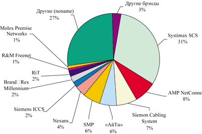
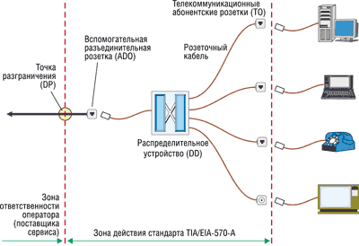

Ростислав Сергеев
Осенью прошлого года наш журнал уже писал о базовых понятиях в области структурированных кабельных систем (СКС), основных игроках российского рынка СКС, особенностях и тенденциях его развития ("BYTE/Россия" № 11'2001, с. 52). Что изменилось за девять прошедших месяцев, какие темы зазвучали более отчетливо, а какие отошли на второй план? На состоявшейся в конце июня второй конференции журнала LAN Magazine, одного из ведущих российских изданий в области СКС, представители нескольких основных вендоров изложили свои взгляды на состояние мирового и отечественного рынка кабельных систем для компьютерных сетей.
В мире
Основные направления развития СКС в общемировом масштабе обусловлены и продолжающимся кризисом в сфере ИТТ, и развитием новых технологий либо совершенствованием старых, и изменением потребностей различных категорий пользователей.
Практически все из упомянутых в предыдущей статье тенденций сохранили свою актуальность. Наиболее заметными в ближайшей перспективе должны стать массовое внедрение кабельных систем категории 6, расширение областей применения СКС (включение в них домашней и неофисной сферы), упрощение процедур монтажа и эксплуатации.
Заметно возросло внимание к системам онлайнового управления СКС (они перечислены в таблице). Если пять лет назад в этой области работала одна-единственная компания RiT Technologies, то два-три года спустя к ней добавились Avaya и ITT NS&S, а сегодня уже семь ведущих производителей СКС предлагают свои продукты для управления кабельным хозяйством в реальном времени.
Системы онлайнового управления СКС
| Система | Компания-поставщик | Web-адрес |
| PatchView for the Enterprise | RiT Technologies | http://www.rit.ru |
| LAN Sense | ITT NS&S | http://www.trale.ru, http://www.ittnss.ru |
| Ipatch | Avaya Communication | http://www.avaya.ru |
| PanView | Panduit | http://www.panduit.ru |
| Brand-Rex CMS | Brand-Rex | http://www.brand-rex.com |
| Real-Time | MolexPN | http://www.molexpn.ru |
| AMPTRAC | Tyco Electronics/AMP | http://www.ampnetconnect.ru |
Как считает Всеволод Николайчук (компания RiT), СКС - самая распределенная, незащищенная часть корпоративной среды, и более 70% времени простоя в сетях связано с отсутствием элементарной документации на нее. К тому же, даже если системный администратор аккуратно ведет журнал соединений, далеко не всегда можно проверить актуальность записей и провести инвентаризацию ресурсов. Все эти задачи автоматически решают системы Online CMS (Cable Management Systems). Для сбора информации о соединениях пока используются три основные технологии, здесь еще далеко до принятия единых стандартов. По мнению Петра Коленько, главы представительства компании Trale (http://www.trale.ru), подобные системы в крупных проектах окупаются в течение одного-двух лет, и заказчики начинают понимать, что это не дорогая дополнительная игрушка, а действенное средство повышения надежности информационной системы предприятия.
Увеличилось количество предложений активного оборудования в составе СКС (см. "BYTE/Россия" № 5/2002, с. 42). Наряду с предложениями западных компаний такие устройства предлагает и отечественный производитель СКС - компания "АйТи" (http://www.it.ru). Малопортовые микроконцентраторы и микрокоммутаторы упрощают реализацию технологии "оптоволокно до рабочего места" (FTTD, Fiber To The Desk).
В России
По мнению Андрея Семенова ("АйТи"), одного из авторов единственной отечественной монографии по СКС, победный марш категории 6 и решений FTTD на отечественном рынке, работающем в условиях жестких финансовых ограничений, откладывается, и такие продукты, равно как и экранированные кабели, будут применяться только там, где это жизненно необходимо. Развитие рынка пойдет эволюционно, и, кроме упомянутых тенденций, будет широко применяться интеграция систем СКС с другими службами. Характеризуя особенности российского рынка, Андрей Семенов оценил его объем в 1 млн портов в год, а также отметил большую долю малых и средних проектов (50% проектов включают установку до 50 портов, 75% - до 200 портов). В то же время в нашей стране значительно возрос образовательный уровень инсталляторов и пользователей, сформировалась отечественная школа специалистов, и "АйТи" перестала быть единственным российским производителем СКС. Заметно повысилась активность поставщиков из Азиатско-Тихоокеанского региона, что еще больше обостряет конкуренцию.
В начале лета вышел очередной отчет британской фирмы BSRIA (http://www.bsria.com.uk) с анализом рынка СКС в Восточной Европе. Лидер за прошедшие два года не поменялся - им остается компания Avaya Communications, на долю которой приходится около 30% рынка (рис. 1).
|  | Рис. 1. Структура рынка СКС в Восточной Европе (по данным BSRIA).
|
Из "не охваченных вниманием" в ноябрьской статье стоит упомянуть компанию SMP (http://www.superiormod.ru), московское отделение которой отметило в апреле годовщину своей деятельности в России. Компания весьма агрессивно начала работать в странах СНГ и за короткий срок сумела попасть в первую пятерку этого весьма жесткого рынка, число игроков на котором превышает полтора десятка. По словам Антона Казанцева, менеджера по развитию бизнеса SMP в СНГ, компания активно участвует в крупных проектах вместе с клиентами или интеграторами и разрешает широко использовать в составе своих решений компоненты других поставщиков. Это особенно важно в условиях модернизации имеющихся сетей, когда по различным соображениям, в том числе финансовым, клиент не может менять сразу всю СКС, а хочет, например, сохранить уже проложенный кабель. В качестве еще одной особенности отечественных крупных проектов г-н Казанцев отметил "разрастание" проектов в процессе реализации: например, в телекомпании НТВ с первоначальных 400 портов объем проекта за год вырос до 2 тыс., а в Совете Федерации - с 700 до 1200. Причем, если изначально планировалась и устанавливалась проводка категории 5е, в дальнейшем возникла потребность в системе более высокой категории.
Категория 6
Кабельные системы категории 6 различные производители СКС фактически поставляют уже более трех лет. Однако до последнего времени официально такой категории не существовало. Принятие стандарта неоднократно откладывалось, но вот наконец в начале лета была официально утверждена соответствующая спецификация TIA/EIA (дополнение к основному стандарту 568-B.2; документ JTC 1/SC от 17 июня 2002 г.)
Категория 5 допускала передачу полезного сигнала на частоте 100 МГц. Первоначально для категории 6 собирались ограничиться частотой 200 МГц, поскольку именно на этой частоте для кабеля на витой паре уровень шума (наводки) от соседних пар сравнивается с уровнем полезного сигнала. Однако комитет по разработке стандарта Ethernet предложил увеличить частоту до 250 МГц, поскольку технологии активного оборудования позволяют выделять полезный сигнал, даже когда шум превышает его по мощности.
Важно еще раз напомнить, что, когда речь идет о компьютерных кабельных системах, полоса пропускания в бит/с за счет методов многократного кодирования вовсе не равна полосе пропускания в герцах. Как правило, в 1 Гц "влезает" гораздо больше (в настоящее время - до 10 бит/с).
Теоретический предел скорости передачи при существующих методах кодирования для кабельной проводки категории 5е составляет 1,2 Гбит/с. Это соответствует приложениям АТМ или Gigabit Ethernet. Аналогичная скорость для категории 6 составляет 2,5 Гбит/с. Впрочем, не исключено, что через несколько лет появятся и будут использоваться в промышленных масштабах другие, более сложные методики кодирования сигнала, которые позволят увеличить эту скорость до 5 Гбит/с и выше. Не исключено, что благодаря этому станет возможным передавать по кабелю категории 6 и трафик стандарта 10 Gigabit Ethernet, который в настоящее время только разрабатывается. Ведь еще пять, а тем более десять лет назад никто не мог предположить, что по медному кабелю пятой категории можно будет передавать информацию по протоколу Gigabit Ethernet. И это заслуга не создателей кабельных систем, а скорее разработчиков алгоритмов сжатия и производителей активных сетевых устройств.
Для кабельных систем также отчасти справедлив закон Мура, гласящий, что каждые 3-5 лет требуется повышать производительности на порядок. В значительной степени этому способствует развитие стандарта от Ethernet (1980) - к Fast Ethernet (1994) - Gigabit Ethernet (1998) - 10 Gigabit Ethernet (2002).
Какие же еще преимущества, кроме запаса производительности на будущее и поддержки широкополосных мультимедийных приложений, обеспечивает категория 6? Это меньшее соотношение сигнал/шум на частоте 100 МГц (на порядок по сравнению с категорией 5е) и, как следствие, уменьшение количества ошибок при передаче информации и более надежная поддержка существующих приложений. Так, для кабеля GigaSPEED производства Avaya Communications эта разница составляет 12 дБ (16 раз!).
Испытания, результаты которых представил директор по продажам кабельных систем Avaya Communication Роман Китаев, показали, что фактическая скорость передачи файлов по кабелю категории 6 при работе с приложением Fast Ethernet (100 Мбит/с) в два-три раза выше, чем у категории 5е при одинаковом физическом быстродействии линий (из-за уменьшения ошибок).
Аналогичную картину можно обнаружить и при передаче "живого видео". Передача видео и другой мультимедиа-информации в реальном времени, а также приложения IP-телефонии становятся все более популярными в сетях Ethernet. Потеря нескольких пакетов, не столь заметная при передаче файлов (она легко "лечится" повтором и, как правило, несущественно влияет на скорость передачи), гораздо сильнее сказывается на воспроизведении мультимедиа-информации: возникают потери кадров, замирания, скачки изображения.
Причем все это справедливо не только для приложений Gigabit Ethernet, но и для Fast Ethernet в сильно "зашумленных" помещениях: например, если лазерный принтер стоит "впритык" к горизонтальной кабельной системе. Кроме того, нельзя сбрасывать со счетов возможные затраты на перепрокладку кабеля, что весьма накладно, даже если не учитывать косвенные потери из-за простоя информационной системы во время ее модернизации. А стоимость системы категории 6 вместе с монтажом всего на 20% выше, чем категории 5е.
СКС категории 6 более устойчива к ошибкам монтажа и эксплуатации. Многие производители говорят об этом, но не каждый заказчик понимает, что это такое. А это значит, что в условиях неидеального монтажа и неидеальной эксплуатации система становится более устойчивой к различным непредсказуемым воздействиям. К тому же невозможно предугадать, каков будет через несколько лет уровень шумов в помещении и как это скажется на эффективной скорости работы проводки. Ведь, когда речь идет о категории 6, имеется в виду перспектива как минимум на 10 лет вперед.
Для реальных систем со сроком эксплуатации 8-10 лет окончательная стоимость владения СКС категории 6 (которая изначально на 20% дороже 5е) получается, по оценкам компании Avaya, даже на 15-30% ниже, чем для категории 5е.
И все же, по мнению Сергея Казакова из московского офиса компании Ortronics (http://www.ortronics.com), стоимость СКС категории 6 пока значительно выше, чем у 5е. Массовый переход малых и средних офисных сетей на 5е начался, когда по цене она стала отличаться от категории 5 на 10-15%. Тем не менее Роман Китаев утверждает, что из 31% российского рынка, которые принадлежат компании Avaya, почти половину (т. е. как минимум 15%) составляют кабельные системы категории 6.
Необходимо еще отметить, что стоимость активного сетевого оборудования снижается быстрыми темпами и сейчас практически сравнялась со стоимостью кабельной системы, тогда как 5-10 лет назад кабельная система стоила 10-15% от цены активного оборудования.
Домашние СКС
Повышенное внимание многих производителей к домашним СКС обусловлено тем, что после бурного развития в 1995-1998 гг. рынок офисных СКС в США и других развитых странах вступил в стадию относительного насыщения. Поскольку срок жизни кабельных систем намного дольше, чем компьютеров и активного сетевого оборудования, заменять СКС на более современные продукты никто особенно не торопится (тем более что многие производители дают на них 15-летнюю и даже пожизненную гарантию). Оборудование Gigabit Ethernet пока не слишком дешево, да и медная пара категории 5е, хотя и на пределе своих возможностей, но поддерживает это приложение.
В сфере SOHO, наоборот, в 1999 г. начался бурный рост: все больше людей предпочитают работать дома, не тратя дорогостоящее время, бензин и нервные клетки на дорогу в офис и обратно. Растет количество исключительно домашних пользователей, работающих, однако, с приложениями, которые требуют качественной проводки. Строительные компании также проявляют интерес к этой сфере, поскольку цена и привлекательность жилья, правильно оснащенного современной телекоммуникационной инфраструктурой, заметно повышается. В нашей стране, особенно с развитием коттеджного строительства, также проявляется активность в этой сфере. Об этом, в частности, говорят компании ICS (http://www.intelbuild.ru) и "Мэйдекс" (http://www.madex.ru).
Электроснабжение, водопровод, отопление и канализация давно стали стандартными атрибутами современного жилища, и при строительстве никто особенно не задумывается над их реализацией, руководствуясь общепринятыми международными или национальными нормами и стандартами. Однако в области СКС для жилых помещений этот процесс только начинается. Тем не менее достаточно давно существует американский стандарт TIA/EIA-570-A - он принят еще в 1991 г. Полный перевод его на русский язык можно найти на сайте компании "Мэйдекс" (http://www.madex.ru/htm/view_ps_17a.phtml). Сейчас, правда, уже действует новая версия, которая пока не переведена на русский язык. Стандарт определяет два уровня, отличающихся по степени сложности реализации и работы приложений.
Уровень 1 обеспечивает поддержку базовых телекоммуникационных сервисов цифровой и аналоговой телефонии, спутникового и кабельного ТВ, приложений передачи данных до уровня 10BaseT. Он строится на основе четырехпарного кабеля "витая пара" (UTP) до абонентской розетки и коаксиального кабеля RG-6. Розетка содержит по одному гнезду для подключения кабеля UTP и коаксиала.
Уровень 2 предусматривает создание универсальной кабельной системы, обеспечивающей доступ к базовым, расширенным и мультимедийным телекоммуникационным сервисам. К каждой розетке должны подключаться как минимум два кабеля UTP и два коаксиала; рекомендуется также подключать оптический кабель. Допускается работа приложений до уровня 1000Base-T.
Терминология стандарта TIA/EIA-570-A несколько отличается от терминов СКС, и для многих его понятий в русском языке пока не существует устоявшихся терминов.
|  |
| Рис. 2. Основные элементы кабельной инфраструктуры индивидуального жилого дома.
|
Оборудование пользователя - компьютер, телевизор, телефон и другие устройства подключаются к абонентским розеткам (рис. 2). Телекоммуникационная абонентская розетка (TO - Telecommunications Outlet) обычно состоит из гнезд типа Т568А для UTP и разъемов для подключения коаксиального кабеля. Предполагается, что в каждой комнате жилого помещения есть хотя бы одна розетка и расстояние между ними составляет до 7,5 м по периметру.
Розеточный кабель длиной до 90 м соединяет абонентскую розетку с распределительным устройством, выступая аналогом горизонтального кабеля для офисной СКС. Распределительное устройство (DD - Distribution Device) представляет собой аналог этажного кросса, а точка разграничения (DP - Demarcation Point) находится на границе между зонами ответственности поставщика телекоммуникационного сервиса и оборудованием пользователя (CPE). Максимальное расстояние от DP до абонентской розетки - 150 м. Между точкой разграничения и распределительным устройством должна быть предусмотрена вспомогательная разъединительная розетка (ADO - Auxiliary Disconnect Outlet), обеспечивающая физическое разъединение кабельных систем оператора и пользователя. Она необходима для того, чтобы тестирование и ремонт домашней СКС конкретного пользователя не затрагивали других аналогичных клиентов оператора.
В многоэтажных жилых домах предусмотрены также главный кросс здания и этажные кроссы, соединенные между собой кабелями внутренних магистралей.
Построенная в соответствии со стандартами СКС жилого здания обеспечивает универсальную кабельную инфраструктуру, совместимую с множеством различных электронных систем от разных производителей.